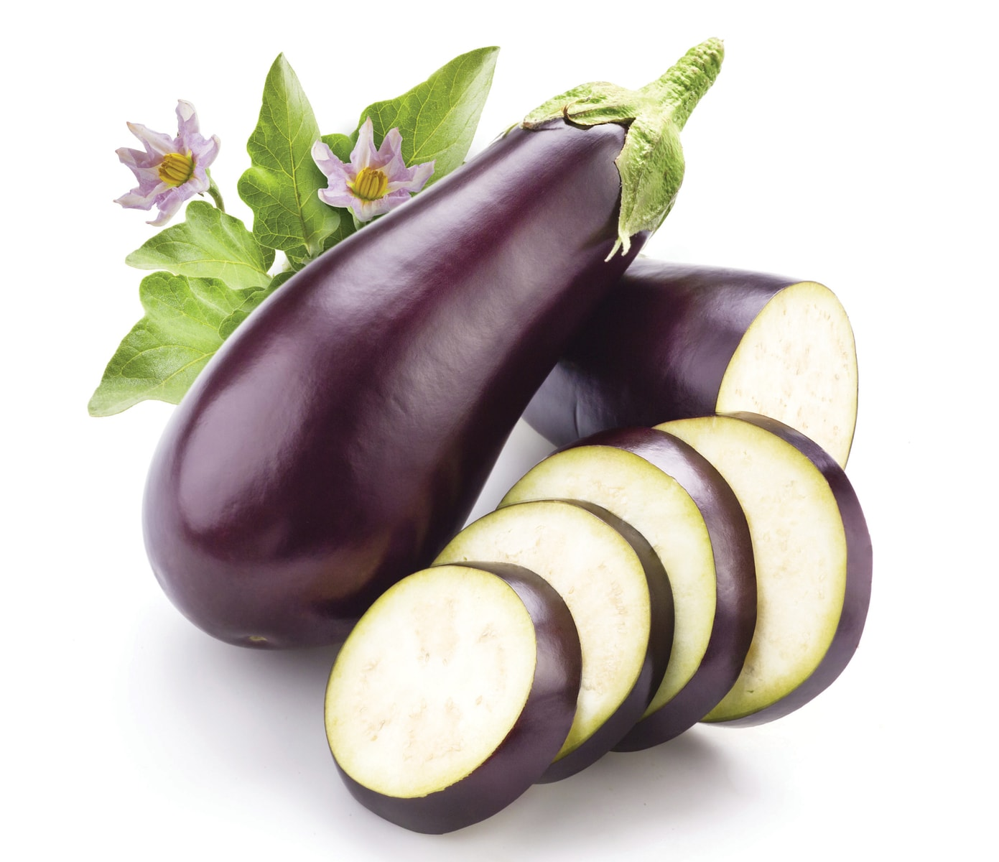
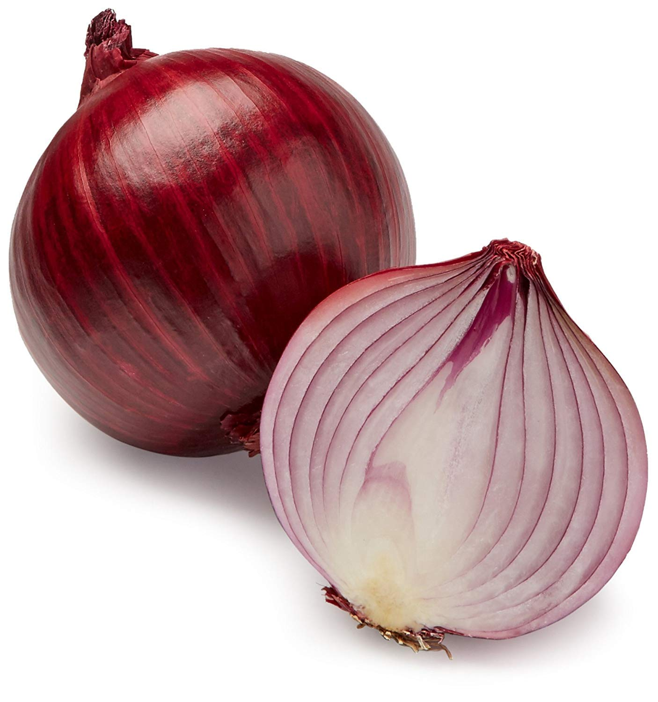
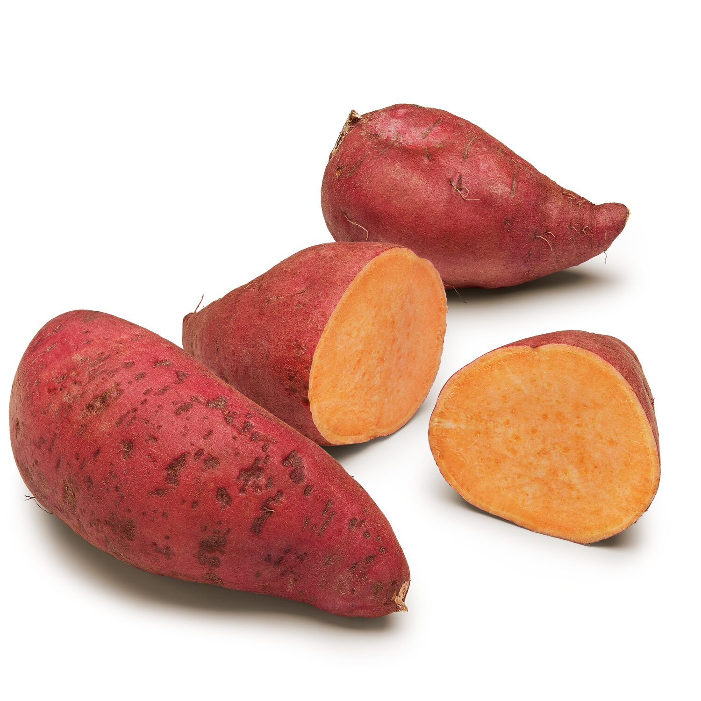

גזר
ירק שורשי, אשר מאופיין בצבעו הנע בין כתום עז ללבן.

מלפפון
הוא צמח מטפס חד-שנתי קיצי ממשפחת הדלועיים.

חציל
צמח רב שנתי, בעל פרי מאכל נפוץ בצבע סגול.
חלפניו
הוא זן של פלפלת צ'ילי בגודל בינוני בעלת טעם אופייני.

בצל הגינה
הוא ירק מאכל מסוג שום ממשפחת הנרקיסיים.
פלפל (פרי)
פלפל הוא שם כללי למגוון של צמחים מסוג פלפלת.
עגבנייה
העגבנייה היא אחד הגידולים החשובים בחקלאות.

בטטה
מין בסוג לפופית במשפחת החבלבליים.